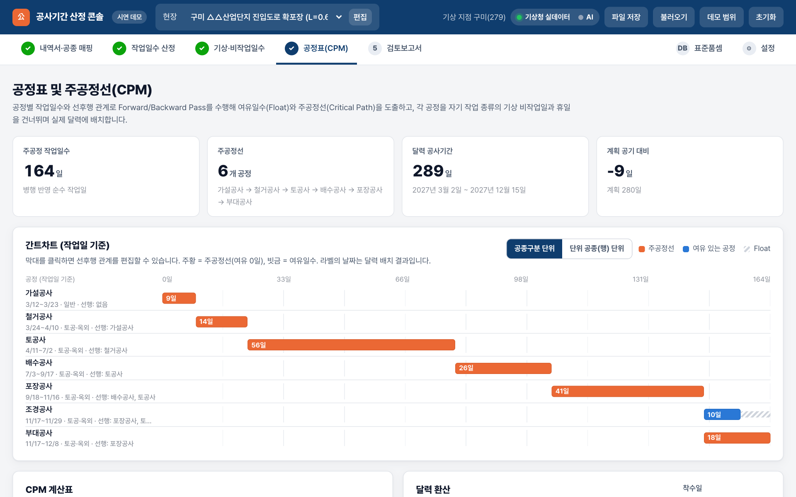
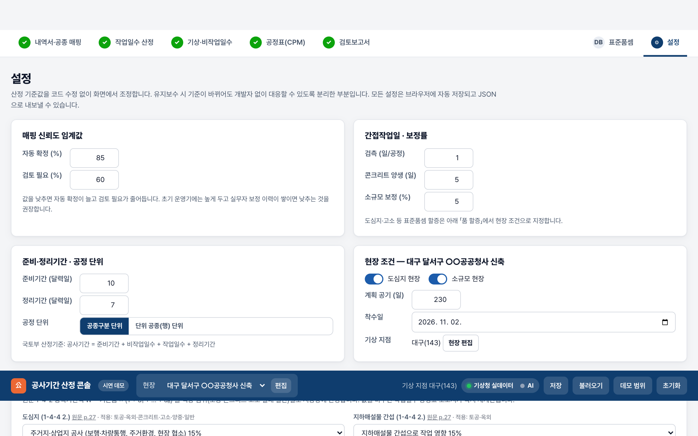
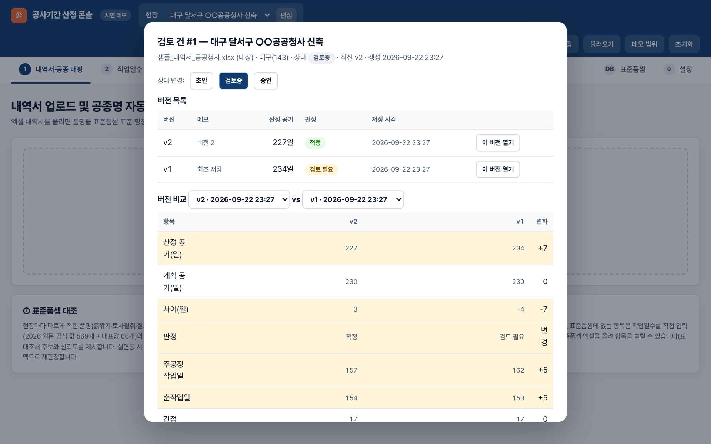

프로젝트 구현 경험 자료
이번 공고에 맞춰 직접 구현한 동작 데모와, 같은 성격의 문제(엑셀 데이터 → 규칙 계산 → 문서 자동 생성)를 실제로 납품한 경험을 정리했습니다.
1요약 — 무엇을 보여드리는가
공고 요구 흐름 전체를 실제로 계산
엑셀 내역서 업로드 → 표준품셈 매핑 → 작업일수 → 10년 기상 비작업일수 → CPM 공정표 → 검토보고서 초안까지, 화면의 모든 숫자가 실제 계산값입니다. 미팅 자리에서 귀사 내역서를 바로 올려볼 수 있습니다.
엑셀 산식 재현 · 보고서 자동 생성
공공기관 근무평가 엑셀(811명)의 산식을 코드로 재현해 100% 검산한 시스템, 현장 점검 결과를 제출 양식 Word로 자동 생성하는 시스템 등을 실제 납품했습니다.
주 1회 진행 확인(온라인 또는 대구 방문, 공고 기준) + 2주 단위 동작 화면으로 확인
개발자가 없는 발주사에 맞춰, 문서가 아닌 "돌아가는 화면"으로 진행을 확인합니다. 기준값은 코드가 아닌 설정으로 분리해 완료 후에도 직접 조정할 수 있습니다.
2제안 설명 — 위시켓 제안 요청 사항 1·2·3에 대한 답
미팅 안내문의 세 가지 요청에 각각 추천안 · 이유 · 대안과의 비교 순으로 답합니다. 화면으로 확인할 수 있는 항목은 3절 데모 번호를 붙였습니다.
요청 1 — 내역서·공종명을 표준품셈에 연결하고 작업·비작업·휴일·간접보정일수를 산정하는 접근
| 항목 | 추천안 | 이유 · 비교한 대안 |
|---|---|---|
| 내역서 구조 인식 | 양식을 고정하지 않고, 모든 시트에서 품명·규격·단위·수량 헤더 행을 자동으로 찾아 표로 바꾼다. 병합셀로 비어 있는 공종구분은 위 행을 승계하고 소계·합계 행은 제외한다. 헤더를 못 찾으면 담당자가 열을 지정한다. (데모 화면 1, 600행 시험 완료) | 대안 "고정 양식 강제"는 귀사가 1차 편집하는 부담을 늘리고 회사별 양식이 바뀔 때마다 실패한다. 하우코스트·XCOST 등 산출 프로그램의 내보내기 양식은 착수 초기에 샘플로 확인한다. |
| 공종명 → 표준품셈 매핑 | 3단계: ① 동의어 사전 + 표기 유사도 + 단위 정합으로 후보와 신뢰도 산출 → ② 벡터 검색으로 후보를 넓히고 LLM이 품명·규격·단위·공종구분을 함께 읽어 문맥 판정(근거 문장 표시) → ③ 신뢰도 85% 이상만 자동 확정, 60~85%는 "검토 필요", 그 이하는 "미매칭". 담당자 확정 결과는 동의어 사전에 축적되어 다음 건부터 자동 확정률이 올라간다. | 대안 "LLM에 전부 맡기기"는 근거를 설명하지 못하고 같은 입력에 다른 답을 낼 수 있어 검토 보고서의 근거로 쓰기 어렵다. 대안 "사전만 쓰기"는 처음 보는 표기를 놓친다. 규칙이 1차, AI는 보정, 사람이 최종이라는 순서가 근거 추적과 정확도를 동시에 만족한다. |
| 자동 판단과 사람 확인의 경계 | 자동 확정은 "틀리면 바로 보이는 것"에만 둔다: 동의어 완전 일치·단위 일치인 항목. 규격 불일치(예: 토사절취인데 리핑암), 단위 불일치, 표준품셈에 없는 항목(현장 정리 등)은 절대 자동 확정하지 않고 담당자에게 넘긴다. 임계값은 설정값이라 운영하며 조정한다. | 1차 파일럿의 실패 패턴(FM-01)은 "자동 매핑이 틀린 것을 맞다고 하는 것"이다. 오매핑 0건이 자동 확정률 95%보다 우선한다. 초기에는 임계값을 높게 두고 확정 이력이 쌓이면 낮춘다. |
| 불확실한 매핑·예외 처리 | 검토 필요 행은 후보 5개와 점수·근거를 보고 클릭으로 확정. 표준품셈에 생산성이 없는 항목은 작업일수를 직접 입력하거나 정리기간으로 흡수. 담당자가 확정한 행은 "실무자 확정" 표시와 함께 이력에 남는다. (데모 화면 1·1b) | 예외를 화면 밖(엑셀 수정)으로 보내면 근거가 끊긴다. 모든 예외 처리가 화면 안에서 끝나고 기록되어야 보고서의 근거가 완결된다. |
| 작업일수 | 수량 ÷ (표준품셈 1일 시공량 × 투입조) 올림. 2026 표준품셈 원문의 일당 시공량(품 형식은 조 편성으로 환산)을 쓰고, 1-4절 품 할증(도심지·지하매설물·지세·고소·층수·작업시간·야간·작업환경)을 현장 조건으로 지정하면 중복가산식으로 반영. 국토부 2024 가이드라인 부록4 「1일 작업량」도 후보로 둔다. (데모 화면 2) | 귀사가 지금 쓰는 판본·보정치가 있으면 그것을 우선 적재한다. 항목마다 원문 페이지 링크가 있어 "이 값이 어디서 왔는가"를 심의에서 바로 답할 수 있다. |
| 비작업일수·휴일 | 현장 최근접 기상청 지점 10년 일별 자료에 룰(강수·체감온도·순간풍속·신적설·최저기온)을 작업 종류(토공·콘크리트·고소·실내)별로 적용해 월별 산출. 일요일·법정·대체·임시공휴일과 겹치는 날은 1일로만 계상. 국토부 산식(A+B−C, 주 40시간 하한)으로 검산하고 가이드라인 부록3 지역값과 대조해 표로 남긴다. 룰은 「국토부 2024 예시」·「귀사 기준」 프리셋으로 전환. (데모 화면 3) | 대안 "부록3 표만 쓰기"는 지점·기간이 고정되어 현장별 차이를 못 담고, 기준이 바뀌면 다시 계산해야 한다. 일별 자료 + 룰 엔진이면 기준 개정에 설정 변경으로 대응하고, 부록3은 검산용으로 남긴다. |
| 간접·보정일수 | 검측(공정당 일수)·양생·소규모 보정률·준비기간(국토부 유형표)·정리기간(준공 전 1개월 상한)을 설정값으로 두고 가산. 도심지는 품 할증으로 처리해 이중 계상을 막는다. (데모 화면 6) | 현재 값은 일반 가정값이다. 착수 1주차에 귀사 기준으로 교체하고, 이후 개정은 설정 화면에서 한다. |
| 기준·계산 근거 추적 | 보고서의 모든 수치가 (1) 적용 표준품셈 항목·원문 페이지 (2) 할증 조건 (3) 적용 룰과 임계값 (4) 기상 지점·기간 (5) 준비·정리기간 근거 (6) 선후행 편집 이력을 달고 나간다. 2019 훈령 제15조의 산정근거 명시 항목 순서로 9절에 정리된다. (데모 화면 5) | 심의에서 지적되는 것은 결과 숫자가 아니라 "왜 그 값인가"다. 근거가 화면·보고서·DB에 같은 값으로 남아야 한다(같은 것이 어디서나 같은 값). |
| 착수 초기 정확성 검증 계획 | 1주차: 귀사 대표 내역서 3건(건축 2·토목 1 권장)과 해당 완성 보고서를 받아 데모에 올린다. 매핑 표를 귀사 실무자와 함께 행 단위로 채점(맞음·후보에 있음·없음). 2주차: 채점 결과로 동의어 사전·임계값을 보정하고, 비작업일수를 귀사 수기 계산과 같은 기준으로 월별 검산표를 만들어 차이를 설명한다. 공기 총괄이 기존 보고서와 어디서 얼마나 다른지 항목별로 표시한다. 판정 지표: 자동 확정 정확도(오매핑 0건), 상위 5 후보 내 정답 포함률, 비작업일수 월별 차이, 총 공기 편차. | 정답지(기존 수기 보고서)가 있을 때만 검증이 되므로 가장 먼저 받아야 하는 자료다. 이 2주가 나머지 6주의 방향을 정한다. |
요청 2 — 공정표·주공정선·간트·검토 보고서까지 1차 자동화 범위
| 항목 | 추천안 | 이유 · 비교한 대안 |
|---|---|---|
| 1차 자동화 범위 | 내역서 업로드 → 매핑 → 작업일수 → 기상·비작업일수 → CPM 공정표(간트·달력) → 보고서 초안(Word/PDF) → 서버 저장·버전까지 한 흐름 전부를 1차에 넣는다. 대신 각 단계의 "깊이"를 조절한다: 표준품셈은 대표 내역서에 나오는 공종 + 상위 빈도 항목을 검수하고 나머지는 자동 추출값으로 두며, 선후행은 표준 템플릿 + 건별 편집으로 시작한다. | 대안 "매핑·작업일수만 1차"는 결과물이 보고서가 아니어서 효과를 체감하기 어렵고, 후속 계약 판단 근거가 약하다. 흐름을 끝까지 잇되 깊이를 조절하는 쪽이 1~2개월에 맞고 확장도 쉽다. |
| 자동 생성 vs 담당자 확인·수정 | 자동: 매핑 후보·신뢰도, 작업일수, 비작업일수, CPM 계산, 달력 배치, 보고서 표·수치, 판정(적정/검토 필요/부족). 담당자 확인: 검토 필요·미매칭 행, 투입조 수, 현장 조건(할증), 선후행 편집, 준비·정리기간. 담당자 수정 후 승인: 보고서 서술 문단(AI 초안은 "검토자 확인 필요" 표시), 최종 판정 문구. 승인 전에는 "초안" 워터마크. (데모 화면 4·5·8) | 수치는 사람이 손대지 않게 하고(계산 오류 방지), 판단과 문장은 사람이 책임지는 구조가 심의 대응에 맞다. AI가 수치를 만들지 않도록 계산값에 없는 숫자는 자동 표시된다. |
| 결과가 기대와 다를 때 원인을 찾는 방법 | 총 공기가 다르면 위에서 아래로 좁힌다: ① 총괄표(준비·작업·휴일·기상·정리 중 어느 항목이 다른가) → ② 작업일수면 공종별 표에서 어느 행인가 → 매핑 항목·시공량·투입조·할증 중 무엇인가(원문 페이지 링크로 즉시 대조) → ③ 비작업일수면 월별 표에서 어느 달·어느 룰인가 → 국토부 산식·부록3 대조표로 기준 차이인지 데이터 차이인지 구분 → ④ 공정표면 주공정선의 선후행 편집 이력. 각 단계의 값을 바꾸면 이후가 즉시 재계산되어 "이 값을 바꾸면 결과가 어떻게 되는가"를 그 자리에서 본다. 버전 비교로 이전 산정과의 차이를 항목별로 본다. | 대안 "로그를 개발사에 보내 분석"은 비개발 조직에서 지속되지 않는다. 담당자가 화면에서 원인을 좁힐 수 있어야 유지보수 우려(FM-03)가 해소된다. |
| 보정 방법 | 원인이 기준이면 설정(룰·임계값·할증·간접보정·준비정리)을 바꾸고, 데이터면 표준품셈 항목을 화면에서 추가·수정하거나 동의어를 등록하고, 판단이면 행을 확정·직접 입력한다. 세 경우 모두 이력에 남고 보고서 근거에 반영된다. 코드 수정이 필요한 경우는 하자보수로 처리한다. | 보정이 설정·데이터·판단 세 층으로 분리되어 있어야 "어디를 고쳐야 하는지"가 명확하고 개발자 없이 대부분 해결된다. |
| 이번 단계의 성공 판정 기준 | ① 귀사 실제 내역서 3건이 업로드부터 보고서 초안까지 오류 없이 끝난다 ② 자동 확정된 매핑에 오매핑이 0건이고, 못 잡은 항목은 전부 검토 필요·미매칭으로 드러난다 ③ 보고서의 모든 수치에 근거가 붙는다 ④ 비작업일수가 귀사 수기 계산과 같은 기준에서 일치한다(검산표 제출) ⑤ 담당자가 기준값을 설정 화면에서 바꿀 수 있다 ⑥ 귀사 서버에서 매뉴얼대로 설치되고 백업·복구가 시험된다 | "완벽한 자동 매핑"을 기준으로 두면 파일럿은 실패로 끝난다. 틀린 것을 맞다고 하지 않는 것, 근거가 붙는 것, 담당자가 고칠 수 있는 것이 심의와 운영에서 실제로 필요한 기준이다. |
| 초기 검증 시나리오 | 시나리오 A(재현): 기존 완성 보고서가 있는 내역서 1건을 올려 같은 기준값으로 총 공기가 재현되는지(항목별 차이 ±5% 이내 목표). 시나리오 B(변형): 같은 내역서에서 품명 표기를 바꾸고(토사절취↔흙깎기, 단위 대소문자) 매핑이 유지되는지. 시나리오 C(예외): 표준품셈에 없는 항목·단위 불일치 항목이 자동 확정되지 않고 검토 필요로 뜨는지. 시나리오 D(기준 변경): 강수 3mm→5mm, 준비기간 유형 변경 시 보고서까지 일관되게 바뀌는지. 4개 시나리오를 2주차 말 화면 시연으로 통과시킨다. | 시나리오는 착수 후 정할 것이 아니라 지금 정해야 대표 내역서 요청 목록이 나온다. |
요청 3 — 기준선(2,000만 · 1~2개월) 수행안과 권장안
저희 지원 조건은 1,600만원 · 60일입니다. 이를 기준선 수행안으로 두고, 공고 상한 2,000만원까지 사용하는 권장안과 비교합니다. 두 안 모두 60일 안에 끝납니다. 차이는 "얼마나 깊이"입니다.
| 구분 | 기준선 수행안 — 1,600만원 · 60일 | 권장안 — 2,000만원 · 60일 |
|---|---|---|
| 상세 기획 | 요구사항 정의서·화면 설계서 확정(초안 이미 작성), 산정 로직·데이터 구조 확정. 1주 | 같음 |
| 디자인·퍼블리싱 | 데모 화면 구조를 React 화면으로 정리. 별도 디자인 리서치 없음 | 같음 |
| 개발 | 2-1~2-4 전 기능, 서버 저장·버전, Word/PDF 출력, 설정 화면 | 기준선 + 공정표 엑셀 내보내기를 귀사 공정표 양식에 맞춤 + 다건 현장 목록 화면(건별 상태·담당·최근 산정) |
| 데이터 구축 | 표준품셈 원문 자동 추출 전량 적재 + 대표 내역서 3건에 나오는 공종과 상위 빈도 200항목 검수. 국토부 기준 데이터(부록3 대구·경북권 지점, 부록4 건축). 기상 24개 지점 내장 + API | 기준선 + 자동 추출 항목 전량(약 550) 검수 + 부록3 전 지점·부록4 토목 적재 |
| 배포·문서 | Docker 1회 설치, 운영 매뉴얼, 백업·복구 시험, 표준품셈 연간 개정 절차 문서, 인수인계 1회 | 같음 + HTTPS 리버스 프록시 설정 + 인수인계 2회(설치 시·1개월 후) |
| 일정 | 착수 60일: 검증 2주 → 개발 5주 → 통합·검수·인수인계 1.5주 | 같은 60일. 데이터 검수와 엑셀 양식 작업이 개발과 병행 |
| trade-off | 검수 안 된 표준품셈 항목은 "자동 추출" 배지로 남고, 그 항목이 매핑되면 담당자가 값을 한 번 확인해야 한다. 공정표는 화면·엑셀 일반 양식으로만 출력 | 추가 400만원. 검수·양식 작업이 전부 끝나 운영 초기 담당자 확인 부담이 작다 |
후속 범위(1차 밖, 결과 보고 추가 계약): HWP 출력(변환 경로 1주), 수량산출서 연계(1~2주), 승인 워크플로우·사용자 권한(2주), 나머지 업무(설계안전성검토·안전관리계획서 등 문서 산출) 자동화는 같은 구조(데이터 → 규칙 → 문서)로 확장. 각 항목은 1차 결과를 보고 우선순위와 금액을 협의합니다.
- 주 1회 진행 확인(온라인 또는 대구 방문) + 2주 단위 동작 화면 시연
- 개발 중 최신 버전을 언제든 여는 검토용 주소
- 확인 요청은 모아서 한 번에, 주간 한 장 요약
- 임계값·룰·할증·간접보정·준비정리기간은 설정 화면, 표준품셈은 화면 업로드 또는 연간 개정 절차
- 소스(귀사 저장소)·DB 스키마·기준 데이터·요구사항정의서·화면설계서·운영 매뉴얼 인계, 매뉴얼대로 귀사 서버에서 재설치 시연
- 하자보수 기간 무상, 이후 월 단위 또는 건별. 다른 업체가 이어받을 수 있도록 표준 기술·설정 분리·API 문서 자동 생성
3이번 공고 맞춤 동작 데모
공고의 "상세 기능 요구 사항" 2-1 ~ 2-4를 한 화면 흐름으로 구현했습니다. 인터넷 없이도 동작하며(기상 데이터 내장), 실제 xlsx 파일을 파싱합니다.
| 공고 요구 | 데모에서 동작하는 것 | 실 시스템에서 확장 |
|---|---|---|
| 2-1 내역서 업로드·파싱 | xlsx/xls/csv 실제 파싱. 모든 시트에서 품명·규격·단위·수량 헤더 행을 자동 인식하고, 병합셀로 비어 있는 공종구분은 위 행 값을 승계 | 서버 저장, 내역서 버전 이력, 수량산출서 연계 |
| 2-1 공종명 자동 매핑 | 표준품셈·작업량 658개 항목(국토교통부 공고 「2026년 적용 건설공사 표준품셈」 원문 982p를 정제 파이프라인으로 자동 추출한 523개 + 검수 완료 41개 + 국토부 2024 가이드라인 부록4 「1일 작업량」 28개 + 대표값 66개, 원문 PDF 동봉·페이지 링크)의 동의어 사전 + 문자열 유사도 + 단위 정합으로 후보와 신뢰도 산출. 85% 이상 자동 확정 / 60% 이상 검토 필요 / 미매칭 3단계. 실연동 모드에서는 LLM이 문맥으로 재판정. 실무자가 후보 선택·직접 지정·작업일수 직접 입력. 귀사 표준품셈 엑셀을 올리면 항목이 즉시 추가 | 표준품셈 원본 전체 정제, 벡터 검색(pgvector), 실무자 보정 이력 학습 |
| 2-2 현장 위치·기상 데이터·비작업일수 | 현장을 추가·편집하며 시도 선택 또는 좌표 입력으로 전국 74개 기상청 지점 중 최근접 지점을 지정. 주요 24개 지점은 기상청 ASOS 10년(2016~2025) 실데이터를 내장, 그 외 지점은 백엔드가 API로 수집. 강수·체감온도·강풍·적설·한파 룰을 작업 종류(토공·콘크리트·고소·실내)별로 적용하고 값 변경 시 즉시 재계산. 일요일·법정·임시공휴일과 겹치는 날 이중 계산 제외 | 전 지점 자동 수집, 기준 개정 이력 관리 |
| 2-2 국토부 공사기간 산정기준 반영 | 국토부 2019 훈령 「공공 건설공사의 공사기간 산정기준」과 2024 「적정 공사기간 확보를 위한 가이드라인」 원문(PDF 동봉·페이지 링크)을 데이터로 적재. ① 유형별 준비기간 참고표(공동주택 45일·포장 신설 50일 등 12종) 선택, 정리기간 준공 전 1개월 상한 ② 비작업일수 국토부 산식(A+B−C, C=A×B÷달력일수 반올림, 주 40시간 하한 월 8일)으로 본 산정을 월별 검산 ③ 기상조건 「국토부 2024 예시」 프리셋(강수 3mm·체감온도 33℃·최저기온 0℃·최대순간풍속 15m/s·신적설 5cm)과 발주사 기준 전환 ④ 부록3 지역별 비작업일수(2014~2023)와 본 산정(ASOS 2016~2025) 조건별 대조 — 대구 강수 3mm 53.1 vs 54.0, 체감 33℃ 24.8 vs 23.8 ⑤ 부록5 시설물별 산정공식 18종(청사·공동주택·도로포장 등)으로 실적 공기를 구해 ±20% 적정성 검토 ⑥ 부록4 1일 작업량 28항목을 매핑 후보에 합류. 결과는 보고서 7절 「국토부 산정기준 대조」와 근거 절(훈령 제15조 명시 항목)에 인용 | 부록3 전 지점·부록4 전 항목 적재, 기준 개정 버전 관리, 발주청별 기상조건 프리셋 저장 |
| 2-3 작업일수 자동 계산 | 수량 ÷ (표준품셈 1일 시공량 × 투입조) 올림. 2026 표준품셈의 「(일당) 시공량」(예: 강관비계 비계공3+보통인부1 = 55㎡/일, 유로폼 형틀목공4+보통인부1 = 35㎡/일, 터파기 굴착기1.0㎥ = 560㎥/일) 을 그대로 적용하고, 품(인/단위) 형식 항목은 조 편성으로 환산. 표준품셈 1-4절 품 할증(도심지·지하매설물·지세·고소·층수·작업시간 제한·야간·작업환경)을 현장 조건으로 지정하면 중복가산식 W = 기본품 × (1 + Σa)으로 작업 종류별 시공량에 자동 반영. 검측·양생 간접일수, 소규모 보정 가산. 투입조 수 변경 즉시 반영. 표준품셈에 없는 항목은 실무자가 일수를 직접 입력해 포함 | 자동 추출 항목 검수, 높이·규격 변형값 선택 로직, 공종별 개별 할증 |
| 2-4 선후행·주공정선·간트 | CPM Forward/Backward Pass 실제 계산(ES·EF·LS·LF·Float). 공정 단위를 공종구분 또는 단위 공종(내역 행)으로 전환. 선후행 편집 시 주공정선 재계산, 순환 참조 감지. 각 공정을 자기 작업 종류의 기상 비작업일과 휴일을 건너뛰며 실제 달력에 배치(실내 마감은 비에 영향 없음) | 공정 템플릿 관리, 귀사 공정표 양식 맞춤 엑셀 출력(데모는 일반 양식 엑셀 내보내기 동작), MS Project 연계 |
| 2-4 검토 보고서 자동 작성 | 9개 절(개요·매핑·작업일수·기상·CPM·총괄·국토부 기준 대조·검토의견·근거)을 계산값으로 채운 초안. 계획 공기 대비 적정/검토 필요/부족 판정. 실연동 모드는 LLM 서술 초안 생성(계산값에 없는 수치는 자동 표시)과 Word(.docx) 양식 출력. 브라우저 PDF 저장, 산정 데이터 JSON 내보내기. 서버 DB에 검토 건·버전 이력 저장, 브라우저 자동 저장, JSON 파일 저장·불러오기 | DOCX·HWP 양식 출력, 서술 톤 템플릿 관리 |
화면 1 — 내역서 업로드 및 공종명 자동 매핑


화면 2 — 작업일수 산정

화면 3 — 기상 데이터 분석 및 비작업일수

화면 4 — 공정표 및 주공정선(CPM)

화면 4b — 토목 시나리오 (도로 확포장)

화면 5 — 검토 보고서 초안

화면 6 — 설정 (기준값 분리)


데모 범위 안내

실연동 모드 — 백엔드를 켜면 세 가지가 실제 시스템과 같은 방식으로 동작합니다
| 기능 | 오프라인 모드 (파일만 열었을 때) | 실연동 모드 (FastAPI 백엔드 실행 시) |
|---|---|---|
| 기상 데이터 | 기상청 자료와 같은 구조의 내장 10년 데이터 | 공공데이터포털 기상청 ASOS 일자료 API에서 지점별 10년치를 수집·캐시해 비작업일수를 실데이터로 재계산 |
| 공종명 매핑 | 동의어 사전 + 유사도 1차 매핑 | 1차 매핑 + 벡터 검색 후보(658항목 임베딩 인덱스, 코사인 유사도 · pgvector 동일 인터페이스) + LLM 문맥 보정 — 품명·규격·단위·공종구분을 함께 읽고 재판정, 근거 문장 표시 (예: "토사절취인데 규격이 리핑암이라 재질 불일치" → 미매칭으로 되돌림) |
| 보고서 서술·출력 | 계산값을 채운 템플릿 문장, 브라우저 PDF·간이 .doc | LLM 서술 초안(개요·기상 분석·검토 의견 3개 문단, 계산값만 인용) + Word(.docx) 양식 출력(8개 절·표 서식, python-docx) — 생성 예시 내려받기 |
| 저장·검토 이력 | 브라우저 자동 저장 + JSON 파일 | 서버 DB(SQLite, PostgreSQL 동일 스키마)에 검토 건 등록 → 버전 이력·상태(초안/검토중/승인) → 버전 간 산정값 비교. 공고 결과물 "DB 스키마"의 초안(server/schema.sql) |

4지원 시 첨부한 구현 데모 2종
공사기간 적정성 검토 자동화 콘솔
내역서 업로드·매핑, 기상 분석, 공정표, 검토보고서, 표준품셈 검색 5개 화면의 UI 흐름 프로토타입. 화면 구성과 사용성 검토용이며, 이번 미팅 데모(2절)가 그 위에 실제 계산 로직을 얹은 버전입니다.
열기 →다중 현장 공사기간 검토 관리 플랫폼
여러 현장의 검토 건을 칸반으로 추적하고, 승인 워크플로우·검토 이력 버전 비교·리스크 대시보드를 갖춘 확장형. 1차 범위 이후 "나머지 업무"로 확장할 때의 방향을 보여드리는 용도입니다.
열기 →5유사 구현·납품 경험
이번 과업의 본질은 "엑셀로 들어오는 데이터를 규칙에 따라 계산하고, 근거가 붙은 문서를 자동으로 만드는 것"입니다. 같은 성격의 시스템을 실제로 납품한 사례입니다.
공공기관 근무평가 관리 시스템 (운전원 약 850명)
정보통신설비 성능점검 시스템 (34종 설비 · 다중 수행사)
흡연부스 현장 점검 통합 관리 시스템
타이어 O2O 장착 예약 플랫폼
6기술 스택과 선택 이유 (비개발자용 설명)
| 구분 | 기술 | 쉽게 말하면 | 왜 이 선택인가 |
|---|---|---|---|
| 화면 | React + TypeScript | 브라우저에서 바로 쓰는 업무 화면 | 설치 없이 사무실 PC 어디서나 사용. 표·차트·간트를 즉시 다시 그리는 데 유리 |
| 서버 | Python FastAPI | 계산과 데이터 처리를 맡는 뒷단 | 엑셀 처리·수치 계산·AI 연동 도구가 가장 풍부한 언어. 나중에 다른 개발사가 이어받기도 쉬움 |
| 데이터베이스 | PostgreSQL + pgvector | 표준품셈·내역서·산정 이력 저장소 | 공종명처럼 "비슷한 말"을 찾는 검색(벡터 검색)을 같은 DB 안에서 처리. 별도 검색 서버 불필요 |
| 외부 연동 | 공공데이터포털 기상청 API | 지역별 과거 기상 자료 자동 수집 | 공고 명시 요건. 수집 결과를 캐시해 API 장애 시에도 산정 가능 |
| AI | LLM(대규모 언어모델) API | 공종명 문맥 매핑 보정, 보고서 문장 초안 | 수치는 절대 AI가 만들지 않고 계산값만 인용하도록 설계. AI는 "말"만 담당 |
| 배포 | Docker + 발주사 지정 서버(클라우드 또는 사내) | 한 번의 명령으로 설치되는 묶음 | 서버가 바뀌어도 같은 방법으로 설치. 데모 백엔드를 이미 컨테이너로 빌드·기동 확인(이미지 약 300MB, docker compose up -d 한 줄). 인수인계 문서에 그대로 담김 |
7완료 기준 · 진행 확인 · 유지보수
성공적 완료의 기준 (제안)
- 귀사가 제공한 실제 내역서 3건 이상이 업로드부터 보고서 초안까지 오류 없이 끝난다
- 자동 매핑이 못 잡은 공종은 반드시 "검토 필요·미매칭"으로 드러나고, 실무자가 화면에서 보정할 수 있다 (틀린 것을 맞다고 하지 않는 것이 핵심)
- 보고서의 모든 수치 옆에 표준품셈 항목·기상 기준·계산식 근거가 붙는다
- 비작업일수 결과가 귀사가 지금 손으로 계산한 값과 같은 기준에서 일치한다 (검산 표 제출)
- 기준값(임계값·보정률·기간)을 개발자 없이 설정 화면에서 바꿀 수 있다
진행 상황 확인 방법
- 주 1회 진행 확인 + 2주 단위 동작 화면 시연 — 온라인 화면 공유 또는 대구 방문(협의). 문서가 아니라 실제로 돌아가는 화면으로 확인
- 항상 접속 가능한 검토용 주소 — 개발 중인 최신 버전을 언제든 열어볼 수 있는 URL 제공
- 주간 진행 요약 — 완료·진행·다음 주 계획·확인 요청 사항을 한 장으로
- 확인 요청 목록 — 판단이 필요한 항목은 모아서 한 번에 질의 (실무 담당자 부담 최소화)
유지보수와 인수인계
- 널리 쓰이는 표준 기술만 사용 (특수 프레임워크 없음)
- 산정 규칙은 설정·데이터로 분리, 코드에 숨기지 않음
- API 명세 문서 자동 생성 (FastAPI 기본 기능)
- 납품 후 하자보수 기간 무상, 이후 월 단위 유지보수 또는 건별 협의
8미팅 시연 순서 (약 10분)
9착수 전 확인 요청 사항
| # | 확인 항목 | 왜 필요한가 |
|---|---|---|
| 1 | 귀사가 적용하는 표준품셈 연도판(2026 공고본 기준 여부)과 자체 보정 기준 유무 | 공고본 원문은 확보·동봉했으므로, 귀사가 실무에서 쓰는 판본·보정치와의 차이가 정제 DB 구축의 1순위 변수 |
| 2 | 지금 손으로 작성한 검토보고서 샘플 2~3건 (내역서 + 완성 보고서 쌍) — 받는 즉시 데모에 올려 매핑률·산정값을 검산 | 완료 기준 4번 "검산"의 정답지. 보고서 양식·문장 톤의 기준 |
| 3 | 비작업일수 산정에 실제로 쓰는 기준 (강수 3mm 외 풍속·적설·한파 적용 여부, 공종별 차등 여부) | 룰 엔진 초기값 확정 |
| 4 | 간접·보정일수 산정 방식 (검측·양생 일수, 도심지·소규모 보정 근거 문서) | 현재 데모는 일반적 가정값. 귀사 기준으로 교체 필요 |
| 5 | 공정 선후행 관계를 누가 정하는가 (표준 템플릿 vs 건별 입력) | CPM 자동화 범위 결정 |
| 6 | 서버 환경 (클라우드 신규 / 기존 서버 / 사내) 및 공공데이터포털 계정 | 인프라 구축·배포 항목 |
| 7 | 보고서 최종 출력 형식 (PDF / DOCX / HWP) | HWP는 별도 변환 경로가 필요해 범위 확정 필요 |
| 8 | "나머지 업무"의 대략적 목록 | 1차 설계에서 확장 여지를 미리 남기기 위함 |
| 9 | 월 처리 건수와 건당 소요 시간, 주 발주처 유형(지자체·공공기관·건설사) | 생산 도구로서 다건 처리 화면과 우선순위 결정 |
| 10 | 보고서 납품 형식 — 발주처가 HWP를 요구하는지, 심의 제출 양식이 정해져 있는지 | HWP 변환 경로와 보고서 절 구성 확정 |
| 11 | 내역서·수량산출서의 출처 프로그램(하우코스트·XCOST 등)과 내보내기 양식 | 헤더 인식 검증 대상 확정 |
| 12 | 보유하신 공정표 엑셀 샘플 제공 가능 여부 | 공정표 엑셀 내보내기를 귀사 양식으로 맞추기 위함 (권장안 항목) |
| 13 | 대표 내역서 3건 + 해당 완성 보고서를 착수 1주차에 받을 수 있는지 | 초기 검증 계획(요청 1·2)의 전제 |
퍼스트핍 · 본 자료의 데모 화면은 실제 동작 화면 캡처이며, 납품 사례는 계약상 공개 가능한 범위로 기재했습니다.